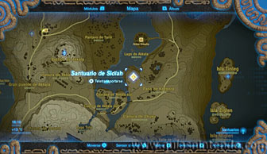
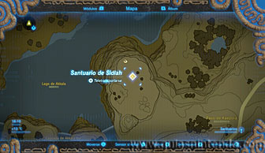
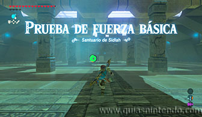
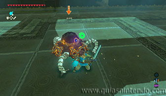
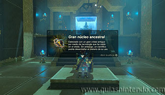

Este santuario está disponible desde que llegas a la región de la torre de Akkala, está situado al sureste de la torre de Akkala.

Dentro debes enfrentarte a un miniguardián 2.0. A estas alturas no tardarás en derrotarle.

Ahora lo único que te queda por hacer es dirigirte al altar para conseguir el símbolo de valía correspondiente.
